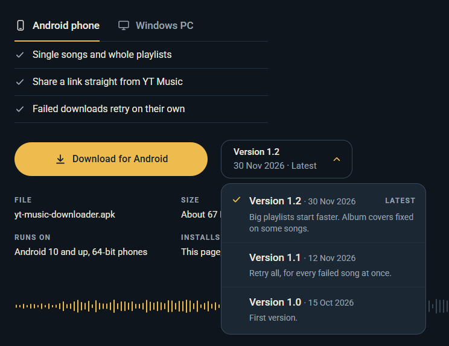
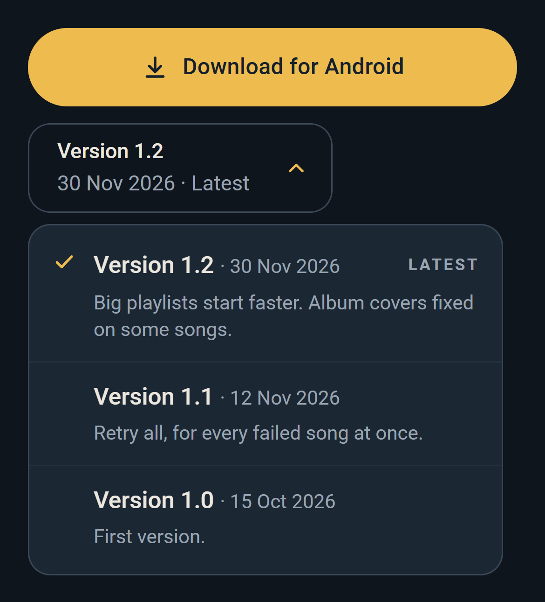
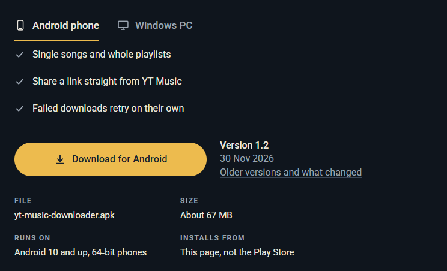
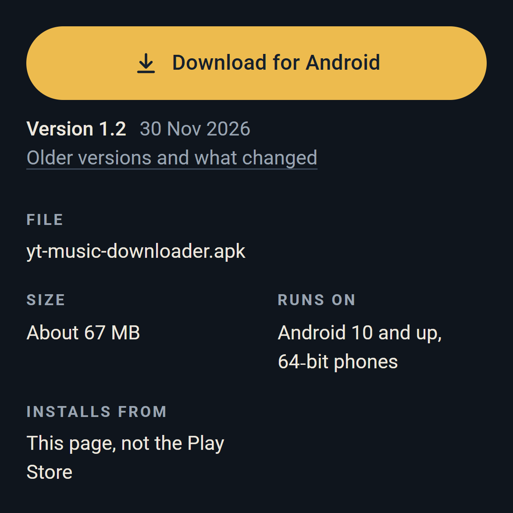
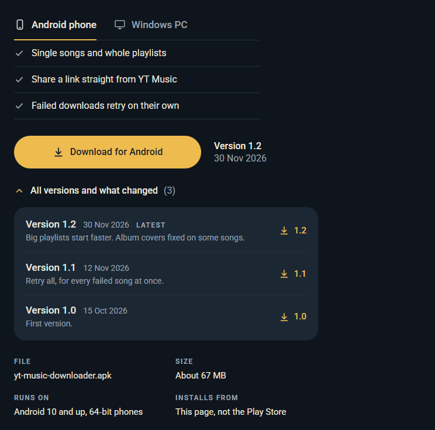
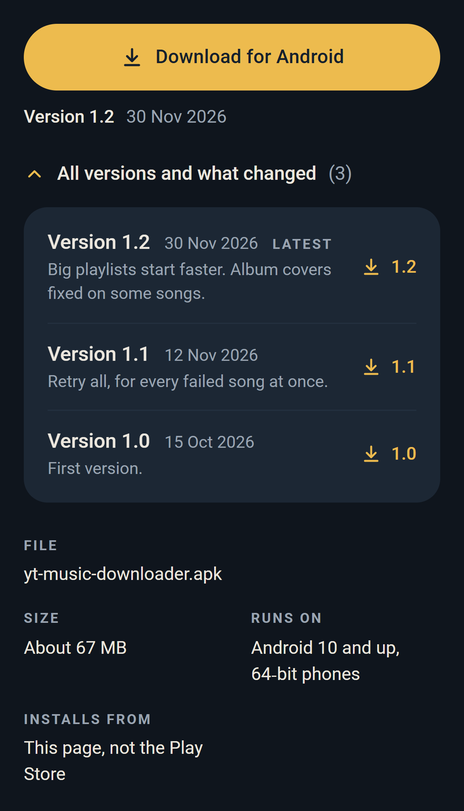
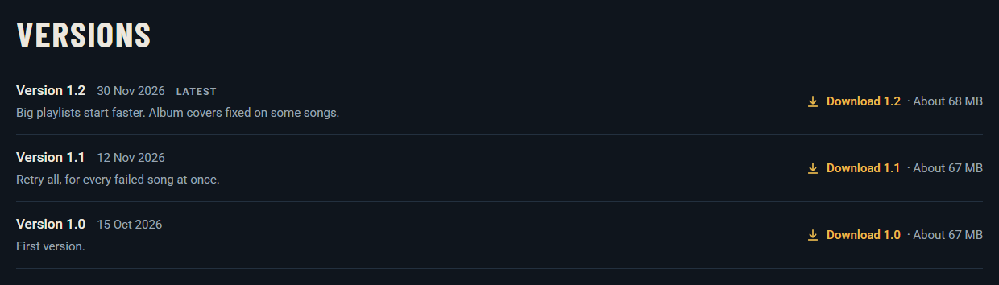
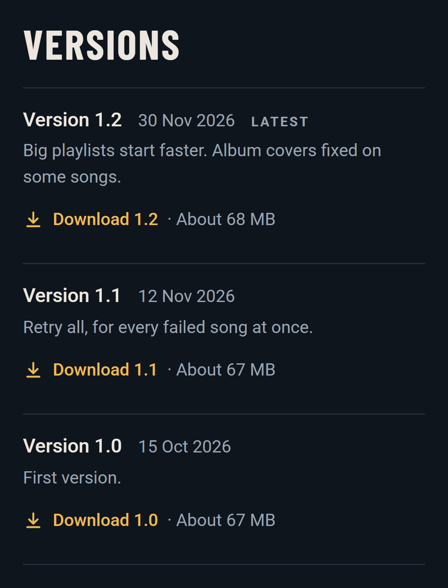

All three on YT Music Downloader's page, Android tab, in its own look. Versions 1.1 and 1.2 and what changed in them are made up for the mockup, only 1.0 is real. Each one follows the Android phone / Windows PC switch, and the catalogue keeps showing only the latest. Menus and lists are shown open.
The version line next to the button becomes a menu. Pick a version and the button gets that one. What changed shows under each version in the menu.
Tradeoff: everything's in one spot and the page doesn't grow. But what changed is hidden till you open it, and the open menu covers the details under it.
Desktop, left half of the first screen

Phone, 390 wide

The button always gets the newest. "Older versions and what changed" under it jumps to a Versions section after the FAQ, set like the FAQ, with a download for each version.
Tradeoff: the first screen barely changes, and what changed is always there to read. But older versions are a scroll away from the button. The section is shown in full below.
Desktop, left half of the first screen

Phone, 390 wide

"All versions and what changed" under the button opens a list right there, with a download for each version.
Tradeoff: it's where you're already looking, and what changed is one tap away. But while it's open it pushes the file details and, on phones, the pictures further down.
Desktop, left half of the first screen

Phone, 390 wide

Desktop and phone

